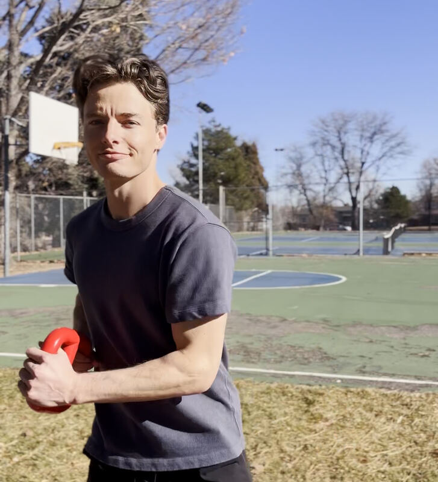
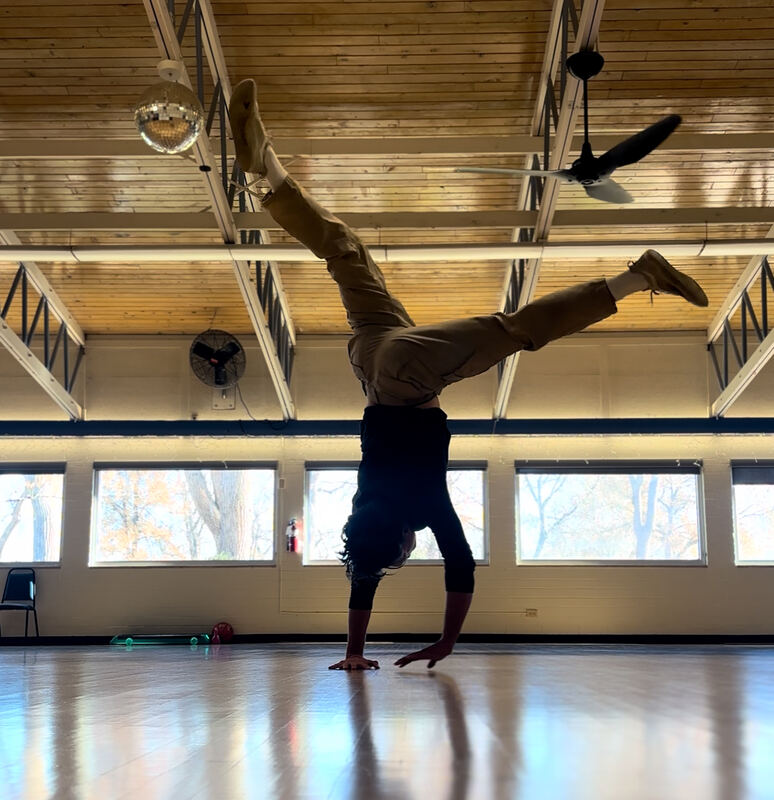
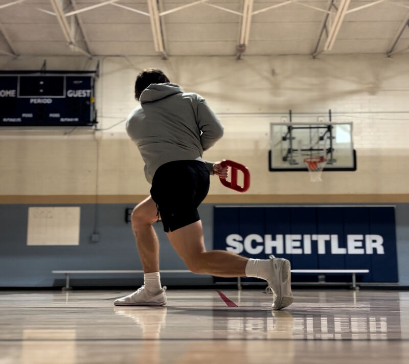

Transform your experience of movement.
This is personal training with extra steps: untangle your relationship to exercise, move better, and enjoy exertion.
Book a free intro call1:1 training · over video

“It went from an arduous obligation to an extension of my contemplative practice that I find really pleasant and look forward to. My mana and HP are higher than ever. … When I meditate, it's great — and now exercise feels like that too.”
 — Elwyn Foote
— Elwyn Foote


A new relationship with movement
Movement is present in every activity of your life: washing the dishes, taking out the trash, lifting a heavy thing when heavy things need to be lifted. Change your experience of movement, and your experience of being alive gets better.
Unlearn what's in the way
- Uncover your enjoyment of exertion — enjoying exertion is the natural state: kids on a playground have it, dogs have it.
- Feel more comfortable — a comfortable, settled seat means the niggling aches don't show up as early, or as often.
Expand what's possible
- More vitality and connection — a relaxed, embodied body makes sensory experience lighter and more vivid. A sense of capacity and self-trust in movement becomes familiar again.
- Accomplish your goals — improve your cardio, run your first 5K, get your first handstand. You define the goal, and we build a practice that will get you there.
Am I a good fit?
You're excited about what's possible. You've experienced transformation in meditation, but you sense that something's missing when it comes to movement. Maybe movement is not something you enjoy. Maybe you don't have a lot of confidence, or you're just not sure what to do. You want to unlearn what gets in the way of natural enjoyment, and you want to expand your movement possibilities. If you want this, you're a good fit.

How it works
The container
You'll have at least one live one-hour session a week, plus four hours of practice on your own. Initial commitment: three months.
How we begin
We start where you are. We establish a baseline. We figure out what you most want from working together. From there, we establish goals.
Unlearn and expand
We unlearn what gets in the way of enjoyment, pleasure, and comfort through somatic practice and gentle movement. And we expand what's possible through games and improvisation, and real-time feedback on your form during training.
Every session is different
Our focus is always goal-dependent. If your main goal is to increase your enjoyment of exertion, that will probably look different than chasing your first muscle-up (both routes are available). We use whatever will help you most: strength training, mobility, you name it.
I will not wreck you. With most clients, I start from where enjoyment and capacity are already available, and help grow practice from there.
A typical session
Here are three session outlines, anonymized:
Finding pleasure in exertion
A meditator who learned to dread exertion after a lifetime of unpleasant exercise.
- 0–10Check-in
- 10–40Listening for pleasurable sensation in exertion — a guided meditation woven through her workout
- 40–60Learning to explore movement sensorially instead of a dry mechanical routine
Fluidity for a busy parent
A parent with a toddler and little spare time.
- 0–10Check-in
- 10–25Active recall — he guides himself aloud through a practice we'd already covered, to test and troubleshoot
- 25–50Guided somatic movement — experiencing the body as a connected whole
- 50–60Squatting and floorwork improvisation and play
Bridging strength and meditation
Already trains regularly, but it feels walled off from his meditation. Current goal: extending his runs to 30 minutes.
- 0–10Check-in
- 10–35Strength work — calibrating load, refining form
- 35–60A guided practice to bring meditation into his runs

What clients say
 Max Soweski
Max Soweski“An easy recommendation for anyone who meditates. Meditation can create habits of being static and even disembodied — turns out the antidote to this is feeling into the many accomplishments our bodies achieve on a daily basis! Tanner makes this readily available.”
 Scott Schaffter
Scott Schaffter“Tanner has been a superb trainer for three years now — much of it over video. His approach focused on sustainability rather than complete and utter annihilation, and it helped me grow and maintain consistency. Particularly helpful through rehabbing a knee injury — a judgement-free space. I can't recommend him more highly!”
 Joe Gherity
Joe Gherity“I recommend it as a bridge into easeful movement that I simply didn't think was possible on my own. It expands the possibility space for how you experience your body.”
 Ye'tsal Khandro
Ye'tsal Khandro“Tanner brought new life to my opening awareness meditation practice. By connecting with my body, it became much easier to stay with sensations, slow down, and at times allow thoughts to completely fall away. I find myself wishing this had been available to me earlier, as so many of my meditation sits might have felt more settled and embodied.”
 Matthew Phillips
Matthew Phillips“I've had plenty of meditation teachers, instructors, and podcasts tell me to ‘feel the earth support me,’ but to be honest I never really got it. The way I explored it with Tanner made me really feel embodied for the first time — and it's something I still enjoy checking into at various points during the day.”
“I've been pleasantly surprised by how creative Tanner has been — the ‘exercises’ don't feel like exercises at all. We always have a lot of fun and I'm never bored. If you're intimidated about starting personal training, I highly encourage you to try working with Tanner.”
“I felt like I'd never get rid of the pain. Now I can release my low back at will, move my neck into new territory, and I'm back to walking and running.”
Begin your practice
Three months to transform your experience of being a body.
Three months
$1,800 paid once
- 12 sessions, typically weekly
- $150 per session — saves $300
Monthly
$700/month
- 4 sessions a month
- $175 per session
Your company may cover this
Some companies cover personal training outright; many more reimburse it through wellness or development budgets. I provide documentation.
Scholarships available
Students, academics, non-profit staff, between jobs, or working at an impact-driven org? I offer reduced-rate sessions. Tell me about your situation and we'll work it out.
Meet Tanner

I've always loved movement. In fifth grade, my favorite way to read was riding a ripstick around the driveway. (I promise it was neither as impressive nor as hard as it sounds.) I was one of those Golden Retriever kids: if there was a ball involved, I was happy. I played sports seriously until I was 15. Then I suddenly found myself looking at an MRI showing two stress fractures in my spine. I was able to walk and move normally shortly after that, but then spent the next two years in and out of rehab, doing those stupid little exercise printouts in fluorescently lit offices, trying to regain function. Eventually I gave up. I was pretty devastated, and went looking for a new place to pour my passion that wasn't going to be as physically demanding. I'd had a long-standing interest in acting, so I went to theatre school.
In actor training, movement became about comfort, enjoyment, and expression. The relationship I'd lost was starting to come back: I was a Golden Retriever again. (That's also when my pain went away.)
I went from being unable to play a full baseball game — or golf, or basketball — without a lot of pain, to enjoying exertion again: two soccer leagues, several seasons of flag football, a year of Brazilian jiu-jitsu, a serious amount of bouldering, contact improv, hip-hop. I can squat one and a half times my body weight. I've done pull-ups for reps with 45 pounds hanging from my feet. Along the way I tore my right knee badly (the terrible triad: meniscus, ACL, MCL) and recovered. I wouldn't attribute any of it to one specific modality. It was the change in my relationship to movement. When I went from brutalized to enjoyment, everything changed: the possibility space just grew. If you'd told me any of that in 2017, I wouldn't have believed you. In 2017, an hour-long car ride could do a real number on my lower back.
During the pandemic, I was doing Feldenkrais almost every day and pairing it with meditation. Through movement, it became clear that kindness and gentleness are much more fertile ground for learning. I didn't have that kind of relationship with anything until I found it with my body. That's what let my meditation change.
And it runs both ways. If you've found enjoyment meditating, you can find it moving. If you've found it moving, you can find it meditating. I physically suffered through my first meditation retreat in 2019. I've sat at least one a year since, sometimes two, and it's been radically different year over year: from really uncomfortable to actively enjoyable. These days I can sit six to ten hours a day on retreat and feel pretty dang good.
I'm NASM certified, and certified in pain reprocessing therapy. I've worked with normies and athletes, and one-on-one with people in chronic pain. I've been a practitioner with Evolving Ground since it formed, and a facilitator since 2024. These days my favorite thing is coaching meditators: people who already know transformation is possible, and want to extend it into their bodies. Usually that means making the move from exercise as an unpleasant grind to exertion that can be fun, actually. And beyond that, accomplishing physical things they never thought they could: their first push-up, their first 10K.
For those who love a list of modalities, here are some of my biggest influences: mainstream exercise science™, Feldenkrais, Alexander, Fighting Monkey Practice, Ido Portal, Vajrayana, dance. I've spent most of the last ten years immersed in these modalities; it's been a joy to shift my focus to teaching them.
Frequently asked
Do I need to be a serious meditator?
Do I need to be fit, flexible, or experienced?
Who is this not for?
Isn't this just personal training with extra steps?
What goals could I work toward?
What do I need?
How often would we meet?
Why a three-month commitment?
What if I'm out of town, or have to miss a session?
What does it cost?
What if I decide it’s not for me?
Get started
The 30-minute call is just a chance for us to get to know each other and see if it's a good fit.
Book a free callPrefer to write first? .